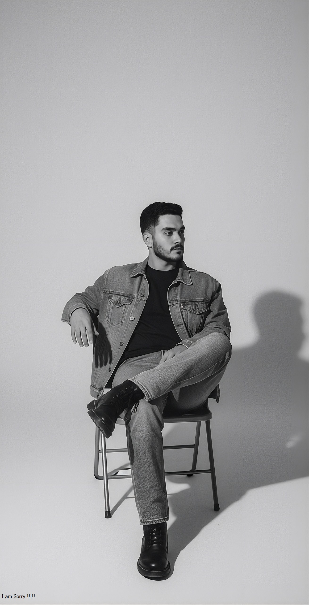

Automation & Python Projects (Independent)
Freelancing
Building practical automations and support tooling for VFX/studio workflows—combining Python scripts, CLI/Git practices, and LLM/local model integrations to streamline repetitive tasks.
MILAD NASROLLAHI / SYSTEM ADMINISTRATOR & VIBE CODER
I’m a Technical Specialist and IT Support Administrator based in Tehran, focused on keeping studio and IT environments stable and people productive. My work spans help desk operations, VFX pipeline support, and building practical automations with Python, LLM APIs, and local model workflows. I learn fast, adapt to new tools, and enjoy turning messy problems into clean, reliable systems.
Languages: English · Farsi (both)
Outside the work: Technology · Science · Gaming · Inventing new things

The journey so far — support, systems, and building smarter workflows.
Freelancing
Building practical automations and support tooling for VFX/studio workflows—combining Python scripts, CLI/Git practices, and LLM/local model integrations to streamline repetitive tasks.
Digital Cinema City
Delivered helpdesk and on-site technical support at Digital Cinema City, resolving hardware/software issues and supporting users and systems in a fast-paced production setting.
Bama Official Insurance Brokerage
Supported brokerage operations through organized clerical work, customer assistance, and accurate record-keeping in a professional office setting.
Islamic Azad University (North Tehran Branch)
Ongoing associate degree studies in Insurance, building a foundation in the field alongside hands-on technical and professional experience.
Key disciplines I bring to my work.
Hands-on troubleshooting and helpdesk support across hardware, software, and Windows environments—keeping systems stable and people productive.
Support for VFX and studio workflows, from workstation and software environments to render-farm and pipeline needs in production settings.
Building useful automations with Python, CLI/Git, and LLM or local-model workflows to reduce repetitive work and make processes smarter.
Want to know more about my skills or work together? Reach out.